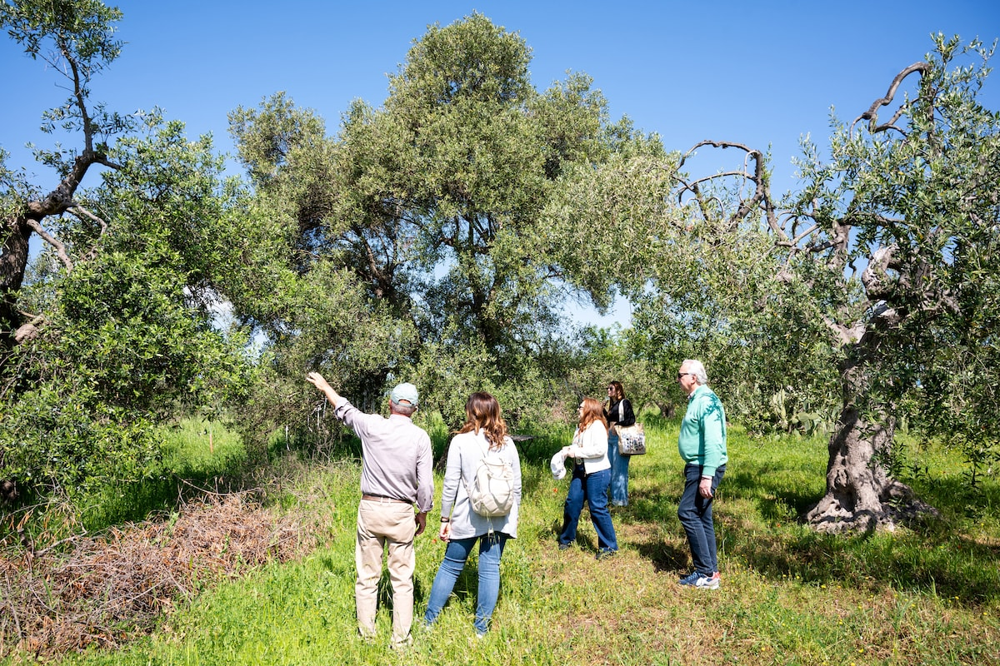
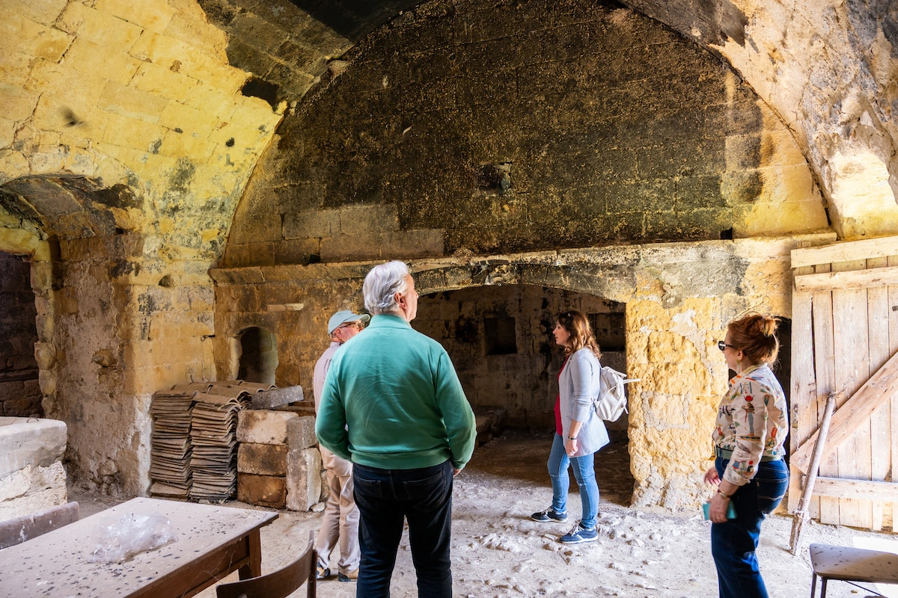
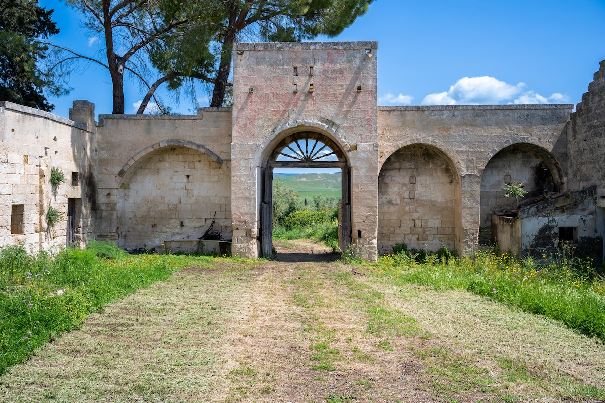
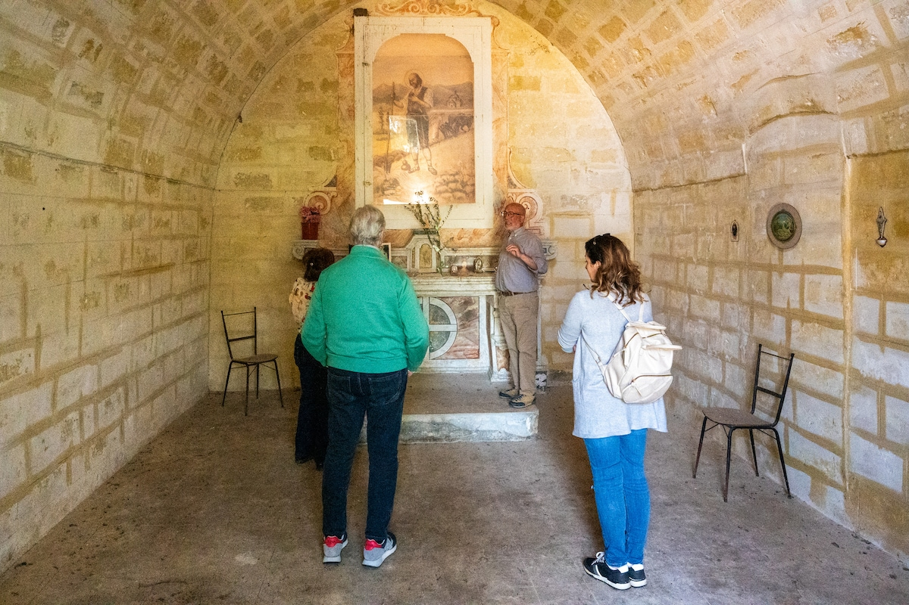
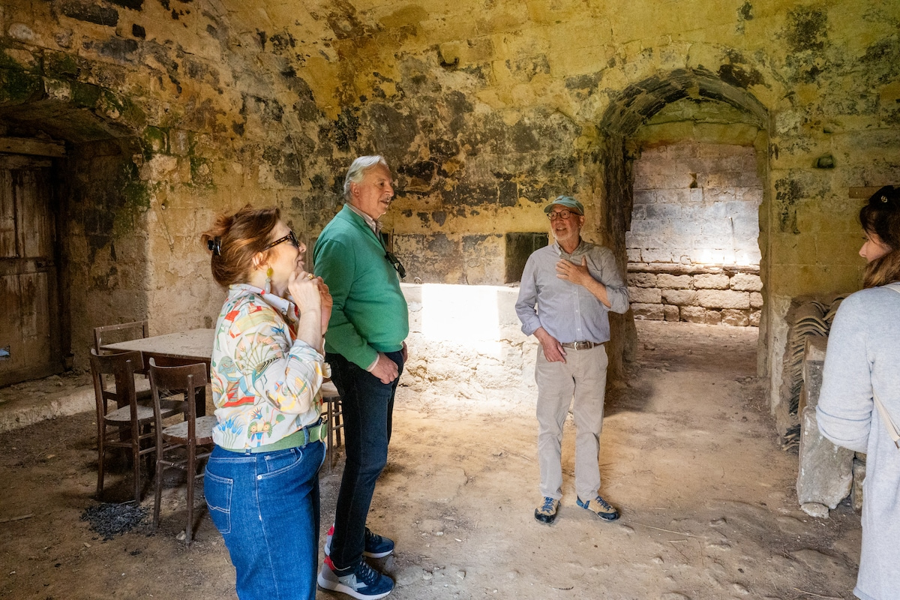

tradizione
& metodo
Dalla potatura degli ulivi alla molitura in frantoio entro 8 ore dalla raccolta: rispettiamo ogni fase della natura.
01
~3000 olivi centenari salvati dall'abbandono

02
Raccolta a mano, rispettando i tempi della natura

03
Molitura entro 8 ore: massima qualità e freschezza

perché il
prodotto conta
Una bottiglia da 500ml che racchiude secoli di storia, terra e cura — a soli €10.
Premio OLIVARUM 2023
Riconosciuto come Olio Lucano d'Eccellenza alla manifestazione OLIVARUM della Regione Basilicata, marzo 2023.

Slow Food Basilicata
Nati come costola della Comunità Slow Food OLIVETI RITROVATI DEL MATERANO, con il Prof. Francesco Linzalone — ex fiduciario Slow Food Matera.

Produzione limitata
Quantità limitata ogni anno. Ogni bottiglia rappresenta il lavoro di una stagione intera — prenotala prima che finisca.
